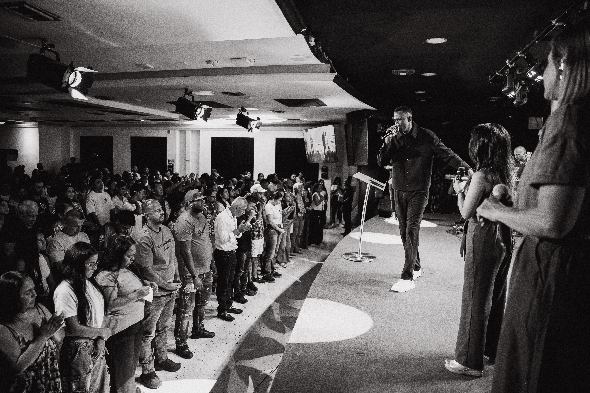

Comunidad
Creemos que nadie debería caminar solo y abrimos espacios para conectar de verdad.

P0 · Quiénes somos
Somos una iglesia local que sigue a Jesús, forma comunidad y sirve a Cali con fe práctica y esperanza.
01 · Nuestra misión
Amamos a Dios, amamos a las personas e imitamos a Jesús. Esta convicción orienta cómo celebramos, acompañamos, servimos y tomamos decisiones.
02 · Lo que nos guía
Creemos que nadie debería caminar solo y abrimos espacios para conectar de verdad.
Acompañamos a cada persona para descubrir cómo puede crecer y servir.
La iglesia se vuelve visible cuando busca el bien de su ciudad y de sus vecinos.
03 · Nuestra historia
Este espacio contará los hitos de la Iglesia del Nazareno Cali, sus raíces y las personas que han ayudado a construir esta comunidad.
Conoce nuestros ministerios ↗
04 · Equipo y comunidad
Conoce a los líderes, equipos de servicio y ministerios que hacen posible esta misión cada semana.
Habla con nosotros ↗